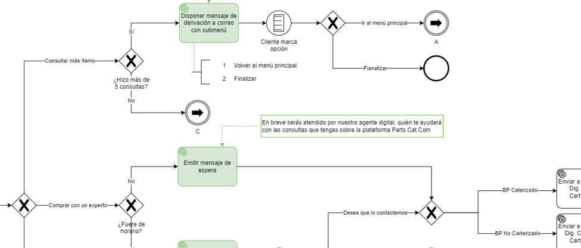

Detección de caída de GETs en minería
Desarrollo de un modelo de CNN para detectar la caída de dientes de palas y cargadores en el sector minero, mejorando la seguridad y eficiencia operativa.
Leer más
CNN
Python
TensorFlow
